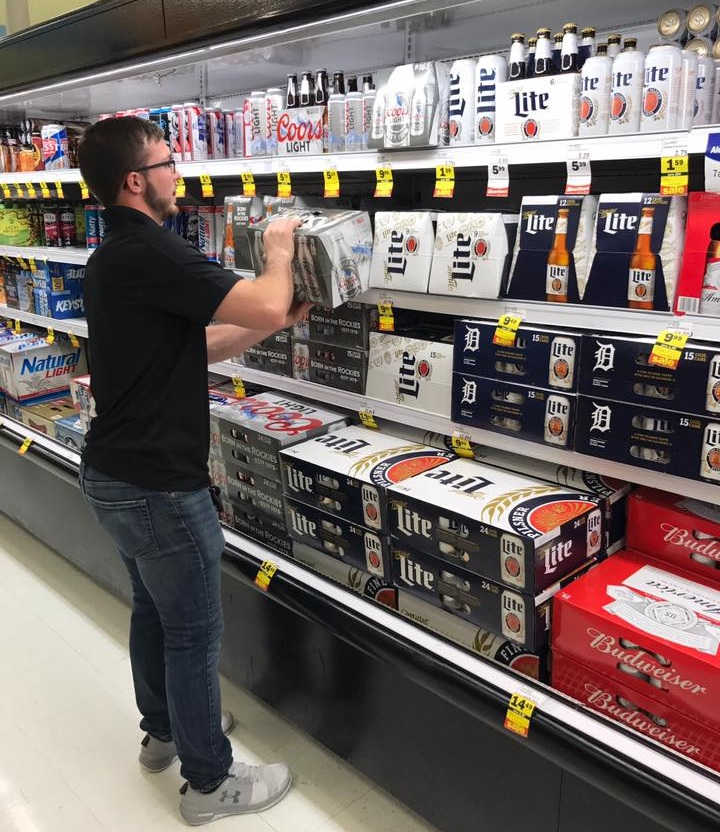
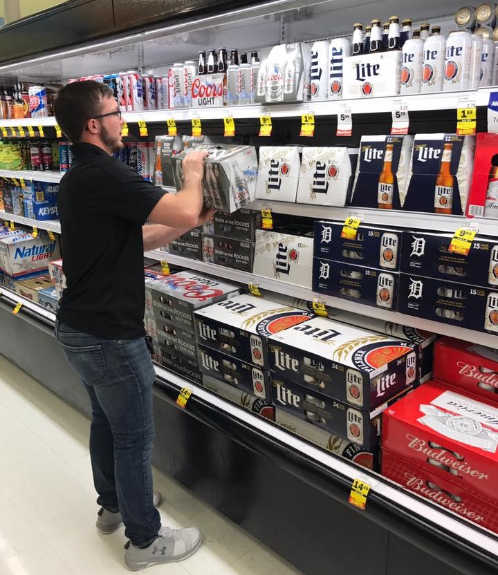
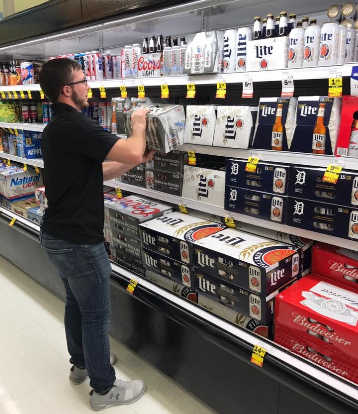

Rio Albanez
Hi my name is Rio Albanez, I grew up in a small town named Blythe, California, where since a young age i’ve been involved in leadership activities and community service. Being from a small town gave me good people skills and taught me how to be very compassionate with others since I come from such a tight knit community.From a young age, My compassionate nature shone brightly through my involvement in various community service initiatives. Whether it was lending a helping hand at St. Vincent dePaul or organizing fundraisers for the Cancer Society, I consistently demonstrated dedication to making a positive impact in the lives of those around me. My active participation in 4-H fundraisers and catechism events at St. Joan of Arc Catholic Church showed my strong sense of civic responsibility and good heart.
My activities beyond community service included extracurricular activities and leadership roles. Throughout my high school years at Palo Verde High School, I led myself as a prominent figure both on and off the field. Playing football for four years, I showcased my athleticism and tenacity, which led to two CIF Football Championships and three-time All-League Football player honors. Not only excelling solely in football, I also thrived in basketball, cross country, track and field, and baseball, showcasing my versatility and determination across multiple sports. In addition to my athletic endeavors, I emerged as a leader among my peers, serving as the President of the National Elementary Honor Society (NEHS) before high school and quarterback of the varsity football team. My ability to motivate others propelled me to be a lead in various class events and activities, where I left a mark as a respected and admired leader. Academically, My high achieving performance is reflected by my impressive GPA of 4.1 and class rank of 16. My commitment to my academics was evident through my enrollment in honors and Advanced Placement courses, including three years of honors English, AP English, AP Physics, and US History Honors. My intellectual curiosity and thirst for knowledge propelled me to excel academically, earning him recognition as a member of the National Honor Society (NHS) and the Principal’s Honor Roll.
Beyond my academic and extracurricular pursuits, I have a diverse range of interests and hobbies. Whether I’m diving into the ocean waves while surfing, embarking on outdoor adventures through hiking and fishing, or honing my skills behind the wheel, I approach life with boundless energy and enthusiasm.In recognition of my outstanding contributions and achievements, I have been honored as Prom King and Mr. Echo, cementing my status as a beloved figure within the school community.As I embark on the next chapter of my life, My unwavering commitment to excellence, leadership, and service will undoubtedly continue to leave a lasting impact on those that cross my path. With my sights set on a bright and promising future, I am poised to make waves and inspire others wherever life may take me.
Experience
Merchandiser
• Made Loads of beverages for delivery
• Stocked beverages at stores
• Experience with delivering, stocking, driving
Culinary club
• Learned ethics of working in a restraunt
• learned how to make exquisite cuisine
St. Vincent De Paul
• Helped homeless with food and housing
• Had Rummage sales for the community
• Helped pay housing bills
• Gave families meals on holidays
Education
UC Riverside
Portfolio
.jpeg) 

